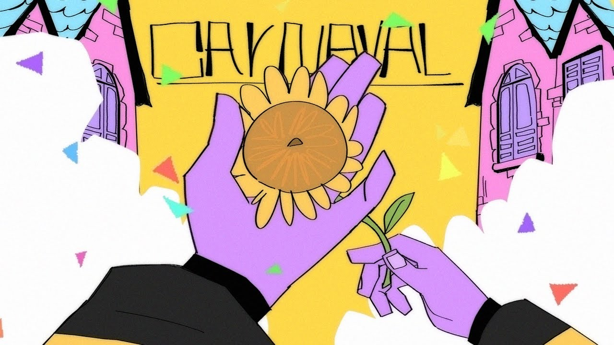

Página Principal
Aqui você sabera um pouco mais sobre o kamitachi. Abaixo está uma imagem do artista.
Início
Quem é kamitachi
'Kamaitachi' faz referência a uma entidade japonesa que representa 'o corte causado pelo vento frio' e foi a metáfora escolhida pelo jovem cantor de 23 anos para representar o que ele deseja que sua arte seja na vida das pessoas: algo com um impacto sutil, mas duradouro.
Como o Kamaitachi ficou famoso?
Kamaitachi começou a carreira colocando suas músicas e clipes em seu canal no YouTube, em 2017. Muitos deles foram produzidos em seu próprio smartphone na época. O resultado foi surpreendente. Hoje, acumula mais de 515 milhões de views na plataforma.
Qual é a religião de Kamaitachi?
A inspiração por trás da faixa surgiu após uma experiência profundamente espiritual em uma “gira” de Umbanda.
Qual a música mais ouvida do Kamaitachi?
Atualmente, em Maio de 2024, a popularidade está em 1.9 pontos e a música mais acessada é a história de jhonny.
Top 10 músicas mais ouvidas do kamitachi
Top 1 a história de jhonny.
Top 2 6 balas ato II.

Top 3 cachecol.
Top 4 Carnaval.
Top 5 Ja já chega Dezembro.

Top 6 boy jhonny.
Top 7 O psicopata.
Top 8 Mistério.

Top 9 Cabelos Arco-Íris.
Top 10 Lana.
Contato
Se você tiver alguma duvida entre em contato e-mail: mikaelmarimon@gmail.com